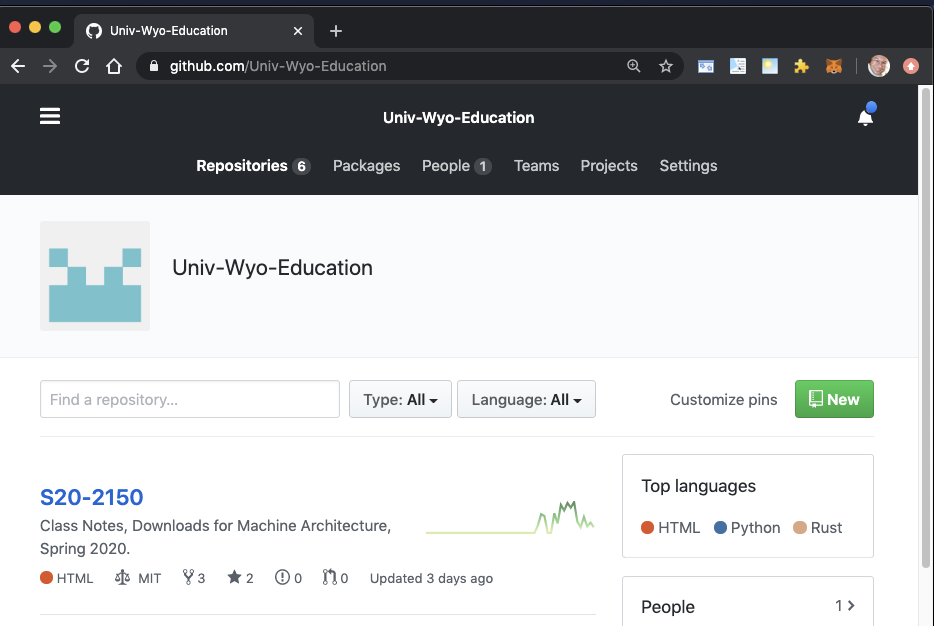
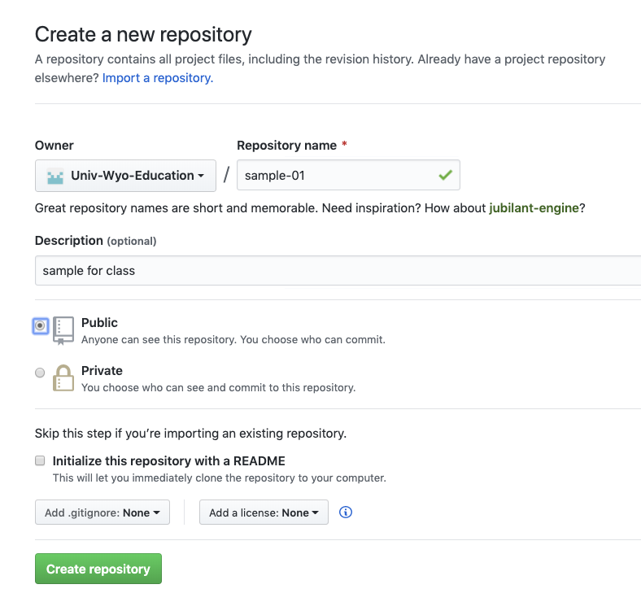
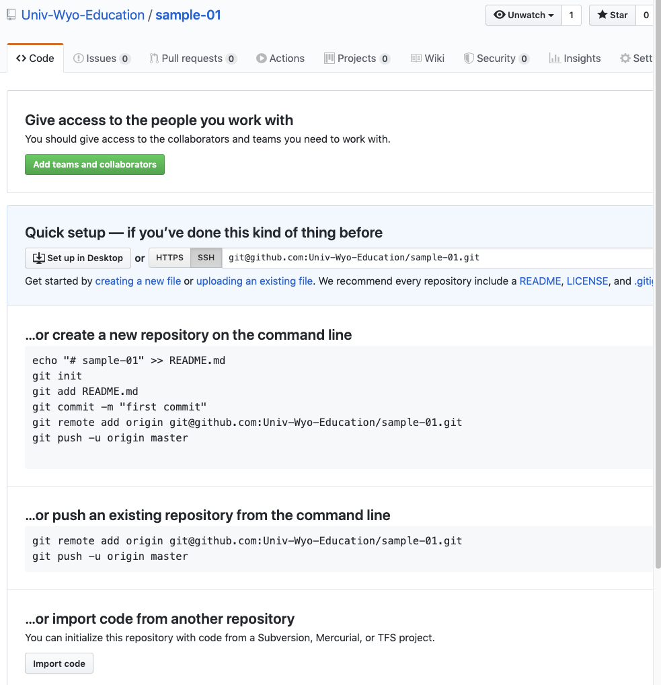

git is a source code control system. This means that it keeps copies of files that you can use in a project. When you make a change it keeps the differences between the changes. This means that you can go back in time and get the old version of files back.
git also has the concept of branches. A branch is a named set of changes. Let’s say that
you have a product that your produce and it is version v1.0.0. Then you make a change to
fix a customer problem on branch customer-patch0001. So you send this version out to the
customer - but now you want to add this to your main set of code - v1.0.0 - also since
this fix you development team has built a new version of the code - but the features that
they have added are in a different set of the code. So the current version of the code
is now v1.1.0 - and you need to have both the original code with the patch for your
other customers ( v1.0.1 - patch applied ) and the new set of code with the patch - as
version v1.1.1 and distribute the modified versions of both.
Also you need to track who made changes to the code. This can be a legal requirement if the code is HIPPA based - where verifying that only the correct set of developers made changes. (There are 14 different laws in the US that apply to this now). So one of the “features” that “git” provides is digital signatures that prove that the correct developer is making changes to code.
Another item that git provides is the ability to add “descriptions” or comments
to code as to why it changes. Our branch with customer-patch0001 probably needs
some comments associated with it - like which customer it was for, what the test
are that had to be written and passed - when it was done - who tested it
where it is documented etc…
Git is relatively unique in that you can do all of this across a distributed environment where each person has a copy of the data and it allows a team to work together. People have built big businesses on top of “git” and provide additional development services. Github.com (now unwed by Microsoft) and gitlab.com are examples. You can also run your own private “git” repository and not subscribe to any of the services. I use all 3. github.com, gitlab.com, gitlab’s software at UW in a private system, and a “git” repository on my own server.
There are GUI tools for using git if you just have to - but git was designed from the beginning to be a command line tool. There are 2 GUI things that I regularly use in relation to GIT - 1. Multi file compare 2. Branching tools The rest of the time I use it from the command line (I also use the on-line github.com/gitlab.com merge facility) and the github.com code review capability.
So… Without further adieu….
To create your own git repository - you don’t need anybody else - you need a copy of git installed.
Install Info: https://git-scm.com/book/en/v2/Getting-Started-Installing-Git
Install for Windows: https://git-scm.com/download/win
Install for Mac - May already be installed: https://www.atlassian.com/git/tutorials/install-git
Now that you have it let’s create a “project” called “sample-01”
$ mkdir sample-01
$ cd sample-01
$ git init .
You have created an empty git repository on your local system. This is not shared with anybody. This is useful all on it’s own. First what happens when you edit an delete that chunk of code you really need. Or you try something and it fails and you want to go back to a previous version. If you have regularly been keeping track of your changes in git, then no big deal. Just go back. All on it’s own it makes an fantastic “backup” for source code.
Let’s put our first fail into git. Edit a file called README.md and put some text in it.
Let’s say you insert “this is my 1st git!” on a line. Then exit and save the file.
$ vi README.md
Now let’s add it.
$ git add README.md
This will stage the file for the repository. If you change the file before “commit”-ing then you will need to add it again. If you make a mistake and add the wrong file there is a way to un-add files (sears google for “git reset”)
Now lets add this file!
$ git commit -m "My First File" -m "This is just a test file"
The first -m is the title for the comment, then 2nd -m is the comment. If you commit win tout
a -m at all and you have a properly configured editor it will bring up your editor to create
the comment.
We can now use “git log” to find out what has been committed and what the comments are.
$ git log
We have been making direct changes to the “master” branch. This is a special branch that has the main set of code on it. You can see what branch you are on with “git branch”.
$ git branch
You should see in green the world “master” with a “*” in front of it.
Most projects will not let you directly change the master - you have to create a branch, make and test your changes, then propose your changes to the “owner” of the project as a “pull request”. Let’s take a look at how you work with a simple branch.
To create a branch you do:
$ git checkout -b my-first-branch
This will create a named branch “my-first-branch”
The “-b” created the branch. You are now on the branch.
$ get branch
Should show you this.
Let’s make a change, add a file, and commit it.
$ vi branch-file.txt
$ add branch-file.txt
$ git commit -m "on branch test"
Now do “git log”
$ git log
You should see something like:
commit 69b498b8321bc3802b30271d9a40faa25d1784d7 (HEAD -> my-first-branch)
Author: Philip Schlump <pschlump@gmail.com>
Date: Thu Apr 23 13:22:51 2020 -0600
on branch test
commit 3c0f2a531461922d36d5067adaf7114ce61492f4 (master)
Author: Philip Schlump <pschlump@gmail.com>
Date: Thu Apr 23 13:17:16 2020 -0600
This shows that we have created and commited on a branch. The numbers after the “commit” word are the “hash” values for each of the commits.
Let’s switch back and forth between the branches and see what happens.
$ ls
$ git checkout master
$ ls
$ git checkout my-first-branch
$ ls
The 1st ls shows us both files. Then we switch to “master” and the file “branch-file.txt” should disappear - the file is only on the branch. Then we switch back to the branch and the file should reappear. To merge we need to be on the “master” branch. So let’s switch.
$ git checkout master
Now we can add in any branch we have.
$ git merge my-first-branch
The branch is still there but the “master” has had the changes added to it. If you want to get rid of the branch - so that it is no longer tracked you can delete it with:
$ git branch -d my-first-branch
This is what is called a “fast-forward” merge. We took the old master and merged and moved it forward to the current new master.
At the end you can go back and see that you only have the branch master with:
$ git branch
What happens with files that you don’t track? You can have un-tracked files in your directory. Let’s create one and see it. This is also how you find files that are changed but not staged with “git add” for your commit.
$ vi un-tracked
$ vi branch-file.txt
Make a change in branch file, create a new file called “un-tracked”.
Now let’s ask git what files have changed with:
$ git status
You should see:
On branch master
Changes not staged for commit:
(use "git add <file>..." to update what will be committed)
(use "git checkout -- <file>..." to discard changes in working directory)
modified: branch-file.txt
Untracked files:
(use "git add <file>..." to include in what will be committed)
un-tracked
no changes added to commit (use "git add" and/or "git commit -a")
It even gives you a helpful hint on the last line.
Let’s add our 2 files and commit.
$ git add branch-file.txt
$ git commit -m "Update to branch-file.txt"
Now we have 2 files in our repository and 1 un-tracked file.
$ git status
Will show us this.
What if I want to rename a file?
$ git mv branch-file.txt main-file.txt
Sometimes we want to save changes - but not commit them - when we switch to a different branch. We can do this with
$ git stash
It will save changed fails so that later we can get them back - but will allow us to switch branches.
Let’s add un-tracked - then we can use it to show how to remove a file.
$ git add un-tracked
$ git commit -m "test file added"
And remove un-tracked
$ git rm un-tracked
$ git commit -m "get rid of a file as a demo"
The file is now gone.
Let’s take our project and create a “public” version of it on “http://github.com" - this will require that you have a github.com account - you can create one for free (this will also work with gitlab.com - I prefer gitlab.com - but I use both).
Sign into github.com - it should look something like:

then click on the green button that says “New” on the upper left.

this will give you a page with instructions on how to send your code to github.

We want the middle set.
$ git remote add origin git@github.com:Univ-Wyo-Education/sample-01.git
$ git push -u origin master
You will need to reface “Univ-Wyo-Education” with your user name. Also depending on how you are logging into github the stuff after “origin” will be different.
This should produce some output that looks similar to:
Enumerating objects: 13, done.
Counting objects: 100% (13/13), done.
Delta compression using up to 12 threads
Compressing objects: 100% (9/9), done.
Writing objects: 100% (13/13), 1.07 KiB | 548.00 KiB/s, done.
Total 13 (delta 2), reused 0 (delta 0)
remote: Resolving deltas: 100% (2/2), done.
To github.com:Univ-Wyo-Education/sample-01.git
* [new branch] master -> master
Branch 'master' set up to track remote branch 'master' from 'origin'.
The “[new branch]…” stuff indicates that it pushed your files to github.com.
If this is your first time working with a “public repository” then let’s give a big shout - “Yea!”. You have created work and published it to the world!
Let’s modify a file, create a version tag and push that to github.com.
First let’s modify the README.md and put some manful info in it. Include your name - and that this is a sample to learn git.
$ vi README.md
$ git add README.md
$ git commit -m "Provide content in README.md"
$ git push origin master
Now let’s create a version tag.
$ git tag v0.0.1
$ git push origin v0.0.1
You now have a “tagged” version that is published with a readme!.
You can also create a branch and the push the branch.
Looking through my history this is 98.1% of the git commands that I have used for the last 7 years.
There are other git commands - like re-writing history - or setting up multiple named git origins.
You just don’t use them very often.
These are the ones that will get you from beginner to using git as an “expert”. At to using a GUI - I have used a GUI 4 times in 7 years to do 3-way diffs (not in the 98.1%)
I use git every single day - after vim and command (cd/cat/head/tail/ls/mv/rm/bash/zsh etc) line it is the most used “tool” that I have.